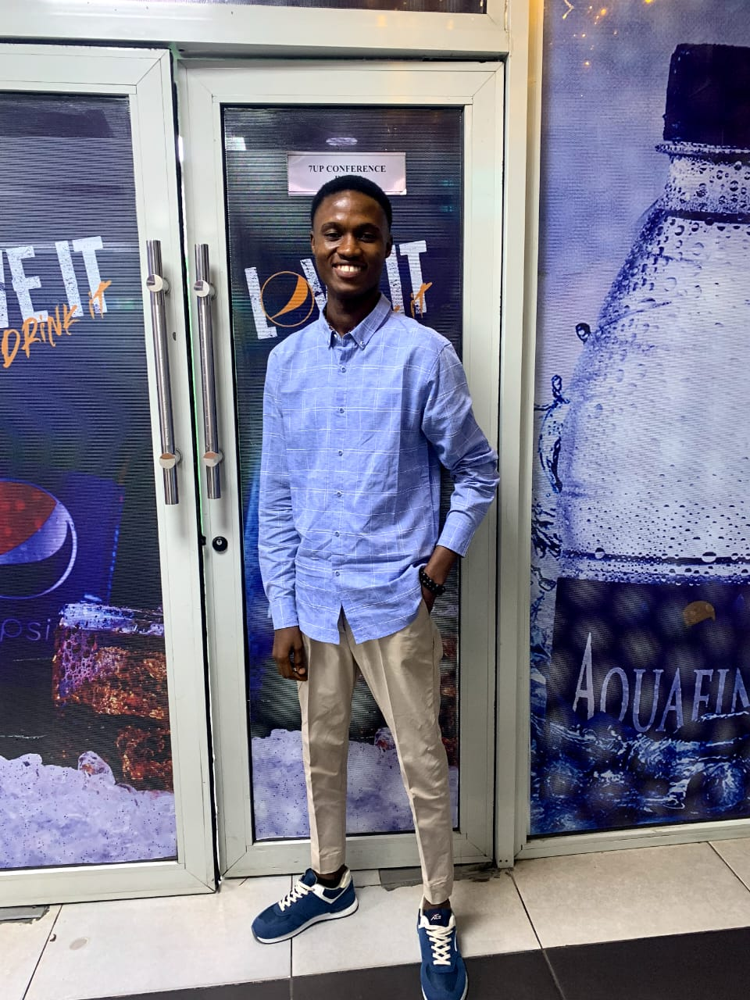

Data Analyst · Front-end Developer
I create intuitive web interfaces and data solutions that make complex information accessible and help teams deliver faster.
I'm Constance Tomessien, a data analyst and frontend developer based in Lagos-Nigeria. I work with founders and product teams to transform data into actionable insights and build clean, responsive web interfaces that turn complex information into intuitive user experiences. My focus is on analytical problem-solving, scalable data solutions, and modern web applications that are both functional and visually engaging.
4+
Years of experience
15
Products launched
8
Happy partners

Currently: Data Analyst at Seven-up Bottling Company
Open for: Freelance product & brand work
Location: Ikeja, Lagos · Fulltime
Selected work
Recent projects blending strategy, storytelling, and execution.
Personal Finance Tracker
Reimagined personal money management with clarity, control, and actionable insights.
- Tracks expenses, income, and savings rate in real time
- Generates easy-to-read financial reports
- Designed modular UI system for scalability
HR Dashboard [Pharmacy]
Reimagined HR operations for compliance and operational efficiency.
- Employee records, leave, payroll
- Role-based access
- Structured workforce reporting
OpsIntel Dashboard
Production analysis template focused on operational visibility.
- Material yield tracking
- Production & downtime metrics
- Centralized KPI dashboard
E-Commerce Web Platform
A scalable online storefront designed to optimize product discovery, streamline checkout, and improve overall customer experience.
- Dynamic product catalog with category filtering and search
- Secure cart and checkout workflow
- Admin dashboard for product and order management
About me
Designing with empathy, curiosity, and impact.
I build clean, responsive web experiences and use data to uncover insights that help products grow. I enjoy turning ideas into smooth, functional interfaces backed by thoughtful analysis.
I like working with teams that care about quality and impact. When I'm not coding or analyzing data, I'm learning new tools and refining solutions.
Toolbox
- Data analysis & visualization
- Python, Pandas, SQL, Excel
- Power BI / Looker Studio
- HTML, CSS, JavaScript, React
- Dashboard design & reporting
Services
Flexible engagements from idea to impact.
Data Analysis
From raw data to insight, delivering smarter decisions.
Frontend Engineering
Clean, scalable and intuitive interfaces.
Visual Solutions
User-focused and engaging design systems.
Let's build something together
Tell me about your next launch. I'll follow up within two business days.
Let’s Talk